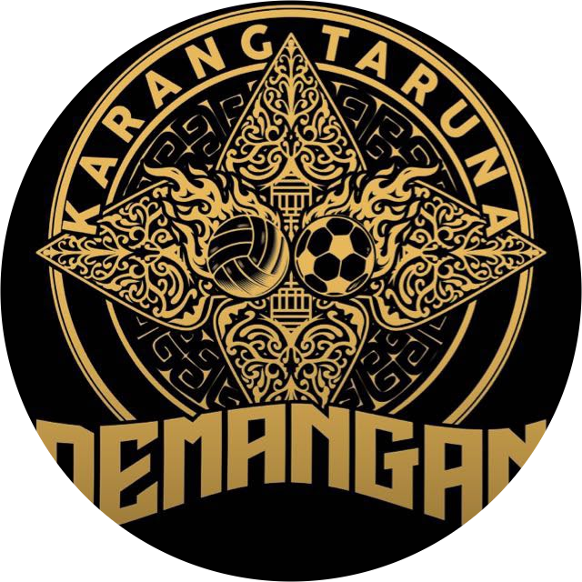

Teaser & Motion Graphic Promo Resmi
Pencatatan pembayaran listrik warga di buku kertas sering tercecer, rekapitulasi memakan waktu berhari-hari, dan akuntabilitas sulit diverifikasi.
Struk Bertumpuk
Mudah hilang & robek
Hitungan Manual
Potensi salah nominal
Rekap Lambat
Laporan tertunda
Dusun Demangan — RT 01, RT 02, RT 03
Satu portal digital terpadu untuk pelayanan warga yang cepat, transparan, rapi, dan terpercaya.
Tidak perlu lagi mengetik satu per satu. Sistem cerdas membaca foto lembar rekap fisik atau file dokumen Excel, membaca banyak warga sekaligus secara otomatis.
Bpk. Haryono (RT 02)
Perhitungan otomatis real-time. Jika ada kembalian langsung dihitung jelas. Jika warga menitipkan kelebihan bayar, tercatat rapi untuk potongan bulan berikutnya.
Kembalian Jelas
Uang kembalian terhitung instan dan transparan.
Saldo Titipan
Sisa uang tersimpan otomatis jadi saldo bulan depan.
Setiap rupiah yang dihimpun pengurus pemuda langsung terhubung ke buku kas dusun. Perangkat desa dan warga dapat mengawasi dengan tenang.
47 Warga
Terdata LengkapRp 235.000
Tersalur ke Kas DusunKLOP 100%
Selisih Rp 0 (Nihil)DUSUN DEMANGAN
"Modern, Transparan, Guyub Rukun.
Dari Pemuda, Mengabdi untuk Kemajuan Dusun."
Dulu... pencatatan manual bertumpuk, hitungan rentan selisih, dan waktu terbuang.